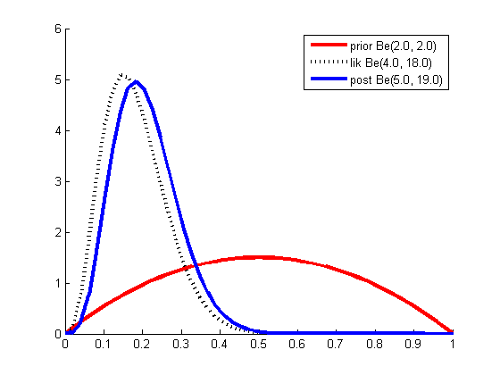
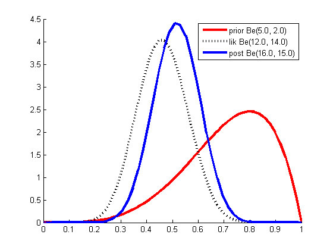

Example of parameter updating in a Beta-Binomial model.
data(1).a = 2; data(2).a = 5;
data(1).b = 2; data(2).b = 2;
data(1).N1 = 3; data(2).N1 = 11;
data(1).N0 = 17; data(2).N0 = 13;
flatPrior.a = 1;
flatPrior.b = 1;
figname = {'betaPost', 'betaDemoPost'};
legendstr = cell(1,3);
for i = 1:numel(data)
prior.a = data(i).a;
prior.b = data(i).b;
N = data(i).N0 + data(i).N1;
nsucc = data(i).N1;
nfail = N-data(i).N1;
post.a = prior.a + nsucc;
post.b = prior.b + nfail;
lik.a = flatPrior.a + nsucc;
lik.b = flatPrior.b + nfail;
figure; hold on
x = linspace(0, 1, 50);
logkerna = (prior.a-1).*log(x); logkerna(prior.a==1 & x==0) = 0;
logkernb = (prior.b-1).*log(1-x); logkernb(prior.b==1 & x==1) = 0;
Pprior = exp(logkerna + logkernb - betaln(prior.a , prior.b));
plot(colvec(x), colvec(Pprior), 'r-', 'linewidth', 3);
legendstr{1} = sprintf('prior Be(%2.1f, %2.1f)', prior.a, prior.b);
logkerna = (lik.a-1).*log(x); logkerna(lik.a==1 & x==0) = 0;
logkernb = (lik.b-1).*log(1-x); logkernb(lik.b==1 & x==1) = 0;
Plik = exp(logkerna + logkernb - betaln(lik.a, lik.b));
plot(colvec(x), colvec(Plik), 'k:', 'linewidth', 3);
legendstr{2} = sprintf('lik Be(%2.1f, %2.1f)', lik.a, lik.b);
logkerna = (post.a-1).*log(x); logkerna(post.a==1 & x==0) = 0;
logkernb = (post.b-1).*log(1-x); logkernb(post.b==1 & x==1) = 0;
Ppost = exp(logkerna + logkernb - betaln(post.a, post.b));
plot(colvec(x), colvec(Ppost), 'b-', 'linewidth', 3);
legendstr{3} = sprintf('post Be(%2.1f, %2.1f)', post.a, post.b);
legend(legendstr)
printPmtkFigure(figname{i});
end
Warning: Log of zero. This warning will be removed in a
future release.
Consider using DBSTOP IF NANINF when debugging.
Warning: Log of zero. This warning will be removed in a
future release.
Consider using DBSTOP IF NANINF when debugging.
Warning: Log of zero. This warning will be removed in a
future release.
Consider using DBSTOP IF NANINF when debugging.
Warning: Log of zero. This warning will be removed in a
future release.
Consider using DBSTOP IF NANINF when debugging.
Warning: Log of zero. This warning will be removed in a
future release.
Consider using DBSTOP IF NANINF when debugging.
Warning: Log of zero. This warning will be removed in a
future release.
Consider using DBSTOP IF NANINF when debugging.
Warning: Log of zero. This warning will be removed in a
future release.
Consider using DBSTOP IF NANINF when debugging.
Warning: Log of zero. This warning will be removed in a
future release.
Consider using DBSTOP IF NANINF when debugging.
Warning: Log of zero. This warning will be removed in a
future release.
Consider using DBSTOP IF NANINF when debugging.
Warning: Log of zero. This warning will be removed in a
future release.
Consider using DBSTOP IF NANINF when debugging.
Warning: Log of zero. This warning will be removed in a
future release.
Consider using DBSTOP IF NANINF when debugging.
Warning: Log of zero. This warning will be removed in a
future release.
Consider using DBSTOP IF NANINF when debugging.
 